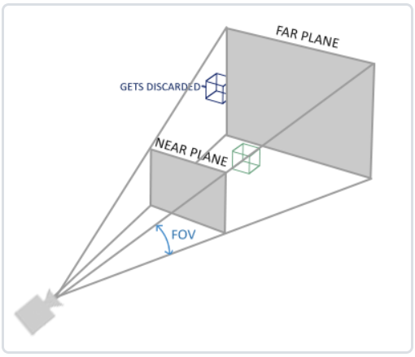

7.相机：Camera原理讲解
提示：
- 在本文中作者采用了
glm库相关的接口讲解，在课程代码中采用QTMatrix中类似的接口，但参数略有不同，详细可参照课程代码； - 作者在
视频课程中对相机原理和实现有详细的讲解，包括原理和代码逻辑，欢迎观看。
7.1.概述和原理
在显示交互中，往往需要进行移动、缩放、旋转等操作，便于多方位查看图形元素，可以通过把场景中的所有物体往相反方向变换的方式来模拟出摄像机，产生一种视角在变换的感觉，而不是场景在变换。
补充：
- 我们根据相机实时的位置姿态等参数计算出观察矩阵（
viewMatrix），传递给渲染管线中的顶点着色器；而后经过渲染管线的处理，场景物体依次经过多种坐标变换和处理后，通过视口变换(Viewport Transform)投射到屏幕上； - 场景中实际是没有相机的，我们通过虚拟出相机及参数，实时构造出
viewMatrix及投影矩阵（ProjectionMatrix）传递给渲染管线，从而不断的变换和处理场景物体坐标，产生一种（通过操纵相机）在场景中进行运动的效果。

定义一个摄像机，我们需要构造观察空间，包括观察位置、方向、右方向向量以及上方向向量。
观察空间的范围有限，将观察坐标变换为裁剪坐标的投影矩阵可以为两种不同的形式：正射投影矩阵(Orthographic Projection Matrix)或一个透视投影矩阵(Perspective Projection Matrix)，每种形式都定义了不同的平截头体。

7.2.缩放
通过控制fov大小来实现缩放，fov会在透视投影时控制投影矩阵的缩放元素。
projection = glm::perspective(glm::radians(fov), 800.0f / 600.0f, 0.1f, 100.0f);
具体可以监控鼠标滚轮来控制fov的变化。
7.3.移动
通过控制相机cameraPos来实现在场景中移动的效果，cameraPos会在观察空间转换矩阵中影响偏移元素。
view = glm::lookAt(cameraPos, cameraPos + cameraFront, cameraUp);
具体可以通过监控鼠标右键移动或按键WASD触发来控制cameraPos的变化。
7.4.旋转
下图为欧拉角示意，一共有3种欧拉角：俯仰角(Pitch)、偏航角(Yaw)和滚转角(Roll)，对于我们的摄像机系统来说，我们只关心俯仰角和偏航角。

给定一个俯仰角和偏航角，我们可以把它们转换为一个代表新的方向向量的3D向量。
// calculate the new Front vector
glm::vec3 front;
front.x = cos(glm::radians(Yaw)) * cos(glm::radians(Pitch));
front.y = sin(glm::radians(Pitch));
front.z = sin(glm::radians(Yaw)) * cos(glm::radians(Pitch));
Front = glm::normalize(front);
// also re-calculate the Right and Up vector
// normalize the vectors, because their length gets closer to 0 the more you look up or down which results
// in slower movement.
Right = glm::normalize(glm::cross(Front, WorldUp));
Up = glm::normalize(glm::cross(Right, Front));
通过控制pitch 和yaw，进而控制cameraPos、cameraFront来实现相机旋转，模拟在场景中的旋转。根据旋转中心的不同可以分为绕原点旋转和绕指定点进行旋转。
7.4.1.绕原点旋转
绕原点旋转过程中，cameraPos与原点距离保持一致，而cameraFront和cameraRight在不断的更新，可以想象为一个飞机在球心和半径固定的球面擦边飞行。
当仅实现相机绕原点旋转时，容易求得cameraPos的值；当既支持绕原点旋转，也支持绕指定点旋转的情况下，绕原点旋转时的cameraPos计算方法同上。
7.4.2.绕指定点旋转
在实际操作中，往往需要绕指定点进行旋转，如绕当前选中的元素或绕鼠标悬浮点进行旋转。
和绕原点旋转类似，绕指定点center旋转的过程中，cameraPos与center距离保持一致，而由cameraPos指向center的向量curFront和对应的右向量curRight在不断的更新。
容易求得center到cameraPos的向量，再叠加center即可得到更新后的cameraPos。
glm::vec3 rPt(Position.x - center.x, Position.y - center.y, Position.z - center.z);
// 计算position在right、front、up坐标系下的局部坐标
float lX = glm::dot(rPt, Right);
float lY = glm::dot(rPt, Front);
float lZ = glm::dot(rPt, Up);
// update Front, Right and Up Vectors using the updated Euler angles
updateCameraVectors();
Position = lX * Right + lY * Front + lZ * Up;
Position.x += center.x;
Position.y += center.y;
Position.z += center.z;
7.5.光标绘制
提示：
最新内容请参考11 添加旋转中心标识和16 Add snap label章节。
当实现绕鼠标悬浮点进行旋转时，当前光标位置尤为重要，可以直观的看到到旋转中心位置。
鼠标光标绘制方法较多，如在OpenGL渲染管线中进行绘制，或用SVG等其他库进行绘制。
在OpenGL中绘制时，可以定义单独的VBO、EBO、VAO，在每个渲染循环中根据当前鼠标位置更新光标偏移。
// draw mouse
glm::mat4 modelMouse = glm::mat4(1.0f);
modelMouse = glm::translate(modelMouse, { ourModel->mousePos.X, ourModel->mousePos.Y, ourModel->mousePos.Z }); // translate it down so it's at the center of the scene
//modelMouse = glm::scale(modelMouse, glm::vec3(1.0f, 1.0f, 1.0f)); // it's a bit too big for our scene, so scale it down
ourShader.setMat4("model", modelMouse);
ourModel->DrawMouse(ourShader);
void DrawMouse(Shader& shader)
{
shader.setVec3("objectColor", 1.0f, 0.5f, 0.f);
glLineWidth(2.0f);
glBindVertexArray(VAOMouse);
glDrawElements(GL_LINES, static_cast<unsigned int>(indices.size()), GL_UNSIGNED_INT, 0);
glBindVertexArray(0);
// always good practice to set everything back to defaults once configured.
glActiveTexture(GL_TEXTURE0);
}
补充：
相机议题中常见的问题有相机裁剪等问题，本文不对此进行深入的探讨，感兴趣的读者可自行搜索和研究。